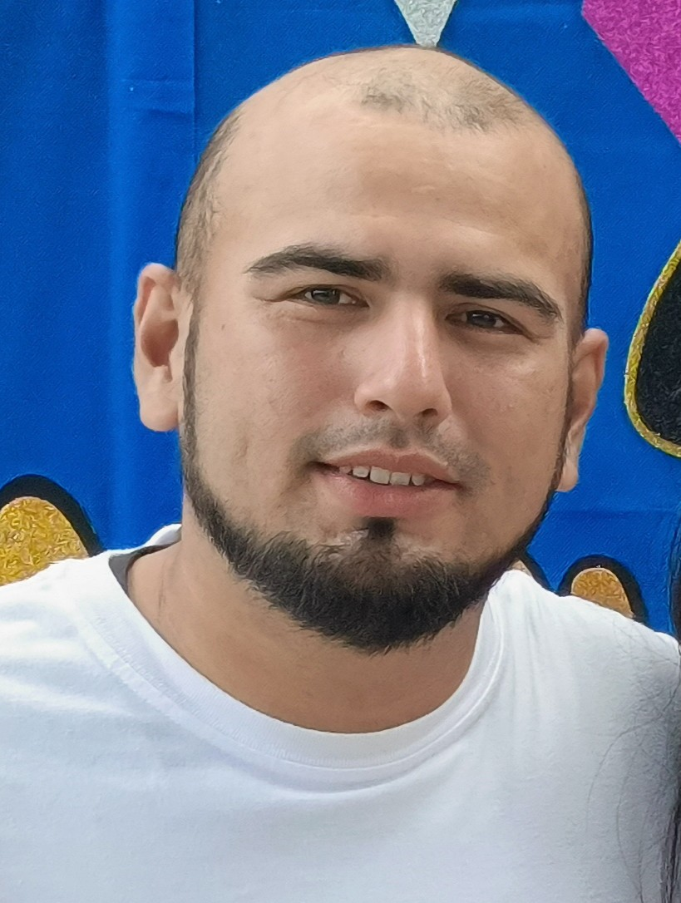

"Soy un estudiante apasionado por el aprendizaje continuo y la resolución creativa de problemas, con un enfoque claro en el desarrollo de soluciones, mi meta principal es integrar mis habilidades técnicas con una visión estratégica para liderar proyectos innovadores, buscando siempre la excelencia operativa y el crecimiento colaborativo. Me motiva enfrentar desafíos complejos que me permitan expandir mis horizontes profesionales mientras aporto valor tangible a mi entorno."